RecapSan Diego · 17 Sep 2026
UC San Diego Park & MarketSwipe →When everyone can clear the bar for good, taste, judgment and a durable point of view are what separate teams. AI didn’t change design; it exposed how shallow most of it was.


 DDX’26 San DiegoSwipe →
DDX’26 San DiegoSwipe →When teams ship weekly, episodic studies arrive after the decision. TaylorMade’s AI caddie showed the alternative: research before, A/B tests during, evaluation after, always on.


 DDX’26 San DiegoSwipe →
DDX’26 San DiegoSwipe →Design’s value is measured by its influence on what gets built, not by deliverables. The next brief is the organisation itself: its systems, ownership and invisible labour.


 DDX’26 San DiegoSwipe →
DDX’26 San DiegoSwipe →The rational user most products are designed for doesn’t exist. AI can read the deck; it can’t read the room. As machines generate more, human originality becomes the scarce resource.


 DDX’26 San DiegoSwipe →
DDX’26 San DiegoSwipe →Models change weekly; structured knowledge compounds. And when an agent is the one browsing and buying, the digital experience is no longer a layer on the business. It is the business.


 DDX’26 San DiegoSwipe →
DDX’26 San DiegoSwipe →The next era of innovation will not belong to the companies that automate the fastest, but to those that intentionally design systems in which humans and intelligent technology can learn, adapt, and make better decisions together.
DDX’26 San DiegoSwipe →


 Photos: Desmond Chua & Nicole GoséSwipe →
Photos: Desmond Chua & Nicole GoséSwipe →

ddxconference.com